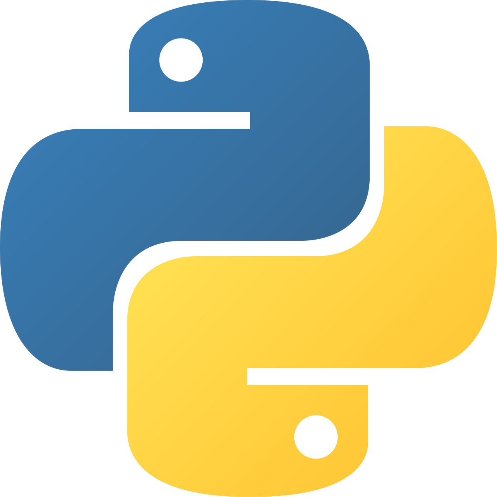

ჩვენ ვცდილობთ ხელმისაწვდომი
გავხადოთ სწავლა ყველა ახალგაზრდისთვის
საქართველოს მასშტაბით
FRONT-END დეველოპერები ქმნიან
ვებსაიტებს და ზრუნავენ იმ საკითხზე, რომ ვებსაიტი
გამოიყურებოდეს პროფესიონალურად ყველანაირ ასპექტში


ჩვენ ვცდილობთ ვუზრუნველვყოთ მოსწავლის სწავლის
განრიგი მისი კომფორტისა და მოხერხებულობის მიხედვით
GOA-ში მენტორები კურსის ყოველ შეხვედრაზე მოსწავლესთან ერთად
განიხილავენ ყველა საკითხს დეტალურად და ამახვილებენ ყურადღებას
იმ საკითხზე, თუ რამდენად კარგად ესმის მოსწავლეს ესა თუ ის საკითხი
ჩვენი დაწესებულება უზრუნველყოფს ყველა მოსწავლეს
რაიმე ტიპის აქტივობით, რათა მათი სწავლის პერიოდი
გახადოს რაც შეიძლება ხალისიანი და მოლოდინით აღსავსე